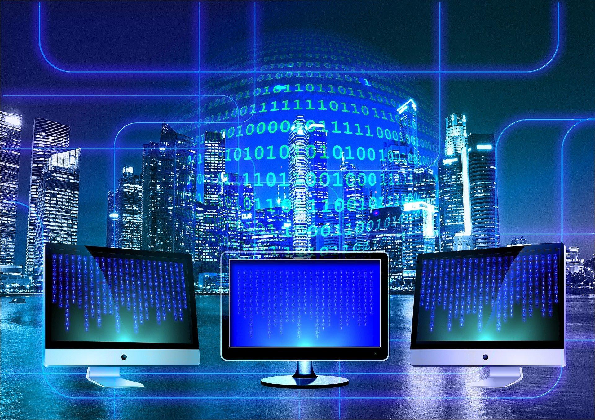

Een computer is complexer dan je zou verwachten. Het is een apparaat dat informatie
opslaat, verwerkt en communiceert. Een computer wordt ook wel een grote rekenmachine genoemd.
Alles wat je doet op een computer, het resultaat is een grote optelsom.
Alle stappen die jij maakt zijn kleine sommetjes, waaruit een grote optelsom ontstaat.
Zo weet een computer wat zijn taak is en hoe hij die moet uitvoeren.
Een leven zonder computers zou er heel anders uitzien dan nu.

Ik ga je een overzicht geven over het proces van de werking van een computer in verschillende stappen.
Invoer (Input): het proces begint bij de invoer van instructies en gegevens.
De invoer wordt omgezet in elektrische signalen zodat de computer dat kan begrijpen.
Dit kan gebeuren via verschillende apparaten die bij een computer horen.
Voorbeelden daarvan zijn: microfoons, muizen en een toetsenbord.
Verwerking (Processing): De centrale verwerkingseenheid,
ook wel het CPU genoemd, is heel belangrijk in een computer. Het wordt ook wel
het hart van de computer genoemd. De CPU ontvangt de invoer en begint met rekenen.
Dat doet hij op deze manier: voert berekeningen en logische bewerkingen
uit op basis van programma-instructies en slaat resultaten op.
De CPU bestaat uit heel transistors, oplopend naar miljoenen,
die je kan aanzetten en uitzetten. Dat kan hij door berekenen met het binaire stelsel.
Uitvoer (Output): Er wordt aan de gebruiker weergegeven
wat de resultaten zijn van de verwerking of opgeslagen voor toekomstig gebruik.
De uitvoer vindt plaats op bijvoorbeeld beeldschermen, printers of luidsprekers.
Gegevens: Gegevens en bestanden worden opgeslagen op permanente opslagmedia,
zoals harde schijven of SSD's. Ze worden georganiseerd in mappen en bestanden,
en kunnen worden opgevraagd en bewerkt door gebruikers en programma's.
Informatie: Informatie speelt een grote rol bij de werking
van computers. De computers zijn ontworpen om informatie te verwerken en
te kunnen opslaan. En het hele concept van de computer is om informatie
te manipuleren op verschillende manieren.
Als je nog een betere uitleg wilt, bekijk deze video:
Bekijk de video